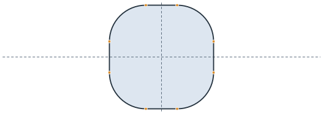
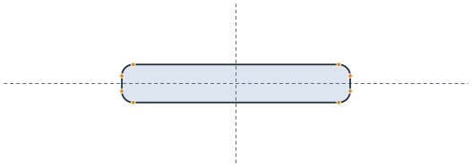
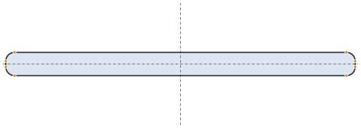
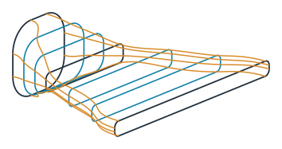
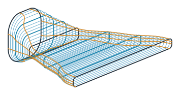
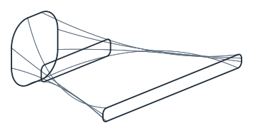
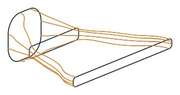
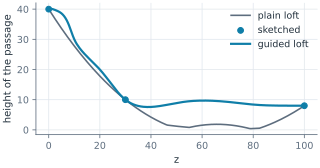

Lofts with guide curves
A loft through a few sections is smooth, but between the sections it goes wherever its splines take it. When the sections change quickly, its walls overshoot, and a passage can pinch shut where it should stay open. Guide curves steer a loft. In planex2d, the guides go through the named corners of the sections, they are cut every few millimeters, and every cut becomes a section of its own, so occ.ThruSections has no room left between the sections. The construction is the same as for the 3D
duct, here on a simpler part.
A blower nozzle takes air from a hose fitting, a rounded square of 40 × 40, and blows it out of a flat slot of 120 × 8 at 100 along the axis. It flattens early, to a neck of 60 × 10 at 30, and then fans out to the slot.
[1]:
import math
import netgen.occ as occ
import numpy as np
import planex as px
The sections
Each section is a rounded rectangle in a constraint sketch on its own plane, the xy plane lifted to its height with px.XY.Offset(z). It is made of four lines and four arcs that are tangent all around, centered on the axis, with the dimensions w, h and r. Figure 1 shows the three sketched sections at one scale. The dots are the eight named corners of each section, bottom.start, bottom.end, right.start and so on, through which the guides will pass.
[3]:
def section(w, h, r, z, id="section"):
sk = px.Sketch(px.XY.Offset(z), id=id)
sk.Move((-w / 2 + r, -h / 2)).Line(w - 2 * r, 0, px.Horizontal, id="bottom")
sk.Arc(r, 90, px.Tangent, id="a1")
sk.Line(0, h - 2 * r, px.Vertical, px.Tangent, id="right")
sk.Arc(r, 90, px.Tangent, id="a2")
sk.Line(-(w - 2 * r), 0, px.Horizontal, px.Tangent, id="top")
sk.Arc(r, 90, px.Tangent, id="a3")
sk.Line(0, -(h - 2 * r), px.Vertical, px.Tangent, id="left")
sk.Arc(r, 90, px.Tangent, id="a4")
sk.Constrain("a4.end", "bottom.start", px.Coincident)
sk.Constrain("a4", "bottom", px.Tangent)
sk.Constrain("a1", px.Radius, r, id="r")
for arc in ("a2", "a3", "a4"):
sk.Constrain("a1", arc, px.Equal)
sk.Constrain("left", "right", px.Distance, w, id="w")
sk.Constrain("bottom", "top", px.Distance, h, id="h")
sk.Constrain("bottom.mid", px.V, px.Coincident)
sk.Constrain("left.mid", px.H, px.Coincident)
return sk
inlet = section(40, 40, 14, 0, "inlet")
neck = section(60, 10, 3, 30, "neck")
slot = section(120, 8, 3, 100, "slot")
sketched = [inlet, neck, slot]
CORNERS = [f"{edge}.{end}" for edge in ("bottom", "right", "top", "left")
for end in ("start", "end")]

(a) inlet, 40 × 40, z 0

(b) neck, 60 × 10, z 30

(c) slot, 120 × 8, z 100
The plain loft
occ.ThruSections through the three sketches gives a smooth solid. The height of its passage along the axis, read from the loft’s long edges (the top ones are the highest points of each cross-section), shows the problem. After the neck, the walls swing past the slot’s height, and the passage closes almost completely before it opens up to the slot again.
[5]:
plain = occ.ThruSections([s.ToOCCWire() for s in sketched], solid=True)
def points(edge, n=200):
t0, t1 = edge.parameter_interval
return [edge.Value(t0 + (t1 - t0) * k / n) for k in range(n + 1)]
def passage(solid, z):
top = np.full(len(z), -np.inf)
for e in solid.edges:
q = sorted(points(e), key=lambda p: p.z)
if q[-1].z - q[0].z > 99:
top = np.maximum(top, np.interp(z, [p.z for p in q], [p.y for p in q]))
return 2 * top
z = np.linspace(0, 100, 201)
print("plain loft: smallest height", passage(plain, z).min(), "slot", slot["h"])
plain loft: smallest height 0.40861213982749645 slot 8.0
Guides
Two interpolated sections in each gap, at a third and at two thirds of the way, with width, height and corner radius interpolated linearly between their neighbors, make seven sections. A spline through each named corner of all seven, leaving the inlet and reaching the slot along the axis, is a guide (Figure 2a).
[6]:
def z_of(sk):
return sk.ToXYZ((0, 0))[2]
def size(sk):
x, y, _ = sk("right.start").center
bottom = sk("bottom.start").center[1]
return 2 * x, -2 * bottom, y - bottom
def between(a, b, t):
w, h, r = (p + t * (q - p) for p, q in zip(size(a), size(b)))
return section(w, h, r, z_of(a) + t * (z_of(b) - z_of(a)), "interpolated")
sections = [inlet]
for a, b in zip(sketched, sketched[1:]):
sections += [between(a, b, 1 / 3), between(a, b, 2 / 3), b]
axial = {0: occ.Z, len(sections) - 1: occ.Z}
guides = []
for c in CORNERS:
corners = [occ.Pnt(*s.ToXYZ(tuple(s(c).center[:2]))) for s in sections]
guides.append(occ.SplineInterpolation(corners, tangents=axial))
Sections cut from the guides
Every 2.5 along the axis, the eight guides are cut, and their points give a new section, with the sides through the outermost corners and the corner radius from the corners between them. These sections cost little and hold the loft to the guides between the sketches (Figure 2b). One occ.ThruSections through all of them gives the nozzle.
[7]:
def meet(guide, z):
a, b = guide.parameter_interval
for _ in range(50):
m = (a + b) / 2
a, b = (m, b) if guide.Value(m).z < z else (a, m)
return guide.Value(a)
def from_corners(points, z):
x, y = np.array([(p.x, p.y) for p in points]).T
left, right = x[6:].mean(), x[2:4].mean()
bottom, top = y[:2].mean(), y[4:6].mean()
r = np.mean([right - x[1], y[2] - bottom, top - y[3], right - x[4],
x[5] - left, top - y[6], y[7] - bottom, x[0] - left])
return section(right - left, top - bottom, r, z, "cut")
step = 2.5
known = [z_of(s) for s in sections]
cuts = [from_corners([meet(g, at) for g in guides], at)
for at in np.arange(step, z_of(slot), step)
if min(abs(at - k) for k in known) > 1e-6]
everything = sorted(sections + cuts, key=z_of)
nozzle = occ.ThruSections([s.ToOCCWire() for s in everything], solid=True)
print(len(sketched), "sketched,", len(sections) - len(sketched), "interpolated,",
len(cuts), "cut sections")
3 sketched, 4 interpolated, 36 cut sections

(a) The seven sections and the guides

(b) all sections of the loft
Plain and guided
Figure 3 shows the plain loft, drawn by its edges (c), and the guided one (d), together with the height of their passages along the axis. The guided loft goes from the neck to the slot without the pinch.

(c) The plain loft, its edges

(d) The guided loft, its edges
[10]:
Chart("z", "height of the passage", lines={"plain loft": (list(z), list(passage(plain, z)))},
curves={"guided loft": (list(z), list(passage(nozzle, z)))},
dots={"sketched": ([z_of(s) for s in sketched], [s["h"] for s in sketched])},
title="The height of the nozzle's passage along its axis")

Checks
The end caps of the loft are the sketched inlet and slot. Its long edges, which leave the planes of the sections and run through their corners, lie on the guides up to the distance printed below. Its volume agrees with the areas of the sections summed along the axis by the trapezoidal rule, which is close because the sections are dense. Finally, the passage stays open, as its smallest height compared with that of the plain loft shows.
[11]:
for s, cap in ((inlet, nozzle.faces.Min(occ.Z)), (slot, nozzle.faces.Max(occ.Z))):
print(s.id, "cap", cap.mass, "sketch", s.Face().mass)
tracks = []
for g in guides:
q = points(g, 4000)
tracks.append(np.array([(p.z, p.x, p.y) for p in q]).T)
worst = 0.0
for e in nozzle.edges:
q = points(e, 20)
if max(p.z for p in q) - min(p.z for p in q) < 1e-6:
continue
for p in q:
off = [math.hypot(p.x - np.interp(p.z, gz, gx), p.y - np.interp(p.z, gz, gy)) for gz, gx, gy in tracks]
worst = max(worst, min(off))
print("long edges off the guides: at most", worst)
areas = np.array([s.Face().mass for s in everything])
zs = np.array([z_of(s) for s in everything])
summed = np.sum(np.diff(zs) * (areas[1:] + areas[:-1]) / 2)
print("volume", nozzle.mass, "sections summed", summed, "relative", (nozzle.mass - summed) / summed)
print("smallest height: guided", passage(nozzle, z).min(), "plain", passage(plain, z).min())
inlet cap 1431.7521598176133 sketch 1431.7521601035994
slot cap 952.2743338691761 sketch 952.274333882308
long edges off the guides: at most 0.3344470312668278
volume 88110.88359715887 sections summed 88102.51107996187 relative 9.503153876512192e-05
smallest height: guided 7.57039630381177 plain 0.40861213982749645